Escala, confiabilidade e arquitetura crítica
Para modernizar sistemas, organizar integrações e sustentar decisões que precisam respeitar segurança, regulação e continuidade operacional.
Mais de 20 anos liderando times e operação crítica em Data, IA, Open Finance e Cloud. Conecto estratégia, decisão técnica e execução para empresas que precisam avançar com clareza.
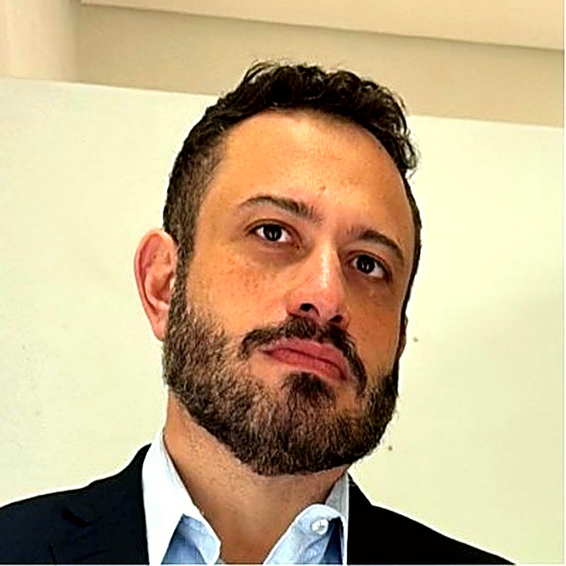
Minha experiência conecta ambientes regulados, produto digital, liderança de engenharia e experimentação com IA. Entro quando a empresa precisa tomar decisões melhores e transformar direção em entrega concreta.
Para modernizar sistemas, organizar integrações e sustentar decisões que precisam respeitar segurança, regulação e continuidade operacional.
Para transformar cenário difuso em prioridades, critérios de decisão e um roadmap que o time consiga realmente colocar em produção.
Para converter IA, automação e IoT em experiências demonstráveis, integradas ao negócio e prontas para evoluir além do primeiro protótipo.
Role a página para acompanhar a lógica do trabalho. O objetivo não é adicionar cerimônia: é reduzir incerteza e criar movimento.
Mapeio contexto, dependências, riscos, restrições e impacto no negócio. Antes de falar em tecnologia, deixamos claro o que precisa mudar.
Defino arquitetura, prioridades e trade-offs com pragmatismo. A solução precisa caber no contexto do time e continuar saudável depois da entrega.
Acompanho decisões, desenho técnico e execução perto do time. Quando necessário, entro no detalhe do código, integração ou operação.
Organizo métricas, documentação útil e transferência de conhecimento. A consultoria termina com capacidade instalada, não com dependência.
Cada trabalho começa com contexto e termina com próximos passos claros. O formato muda conforme a urgência e a maturidade do projeto.
Para projetos travados, decisões pendentes ou riscos que ainda não estão visíveis.
Para transformar uma oportunidade ou modernização em um plano que o time consegue executar.
Para times que precisam de direção sênior durante a execução, sem criar dependência permanente.
Não entrego apenas recomendações. Organizo o problema, defino o caminho e acompanho a execução até a solução funcionar no ambiente real.
Quando o projeto travou ou o desenho precisa suportar escala, segurança e regulação, eu exponho riscos, defino prioridades e construo um roadmap executável.
Atuo perto do código e do time para evoluir APIs, microserviços e integrações com qualidade, observabilidade e segurança para produção.
Transformo IA, LLM, automação e IoT em soluções utilizáveis. Do primeiro protótipo ao deploy, com integração real ao negócio.
Entro para dar direção, organizar decisões e elevar a execução do time. Com contexto, mentoria e responsabilidade pelo resultado.
De software sob medida a um bate-papo para destravar seu time — escolha o tipo de ajuda que faz sentido agora.
Software construído para o seu problema real, do MVP ao deploy em produção.
Automatizo processos e fluxos com LLMs, agentes e MCP. Menos trabalho manual, mais resultado.
Bases reutilizáveis e padrões que aceleram a entrega do seu time.
Conecto sistemas, dados e serviços com APIs e integrações que entram em produção.
Uma conversa objetiva para tirar dúvidas, orientar decisões e desbloquear o projeto.
Mentoria, workshops e treinamentos em IA, Data, Cloud e Open Finance para o time.
Minha carreira foi construída em ambientes onde confiabilidade não é detalhe. Hoje sou Senior Lead na F1RST Digital Services, braço de tecnologia do Santander, liderando 30+ engenheiros e sustentando 40+ APIs de Open Finance e Open Insurance com 99,95% de SLA em produção.
Antes, passei 10 anos no Itaú e construí a FastrackGPS, um SaaS de rastreamento que chegou a quase 10.000 clientes. Essa combinação de empresa grande, produto próprio e execução técnica me ajuda a separar tendência de solução útil.
Tecnologia conectada ao negócio, risco e regulação.
Arquitetura e código quando o problema pede profundidade.
Direção técnica, mentoria e cadência para avançar.
Experiência de quem também lança, opera e evolui produto.
Liderança técnica e de pessoas aplicada a um problema real de custo, risco e escala.
Squad sustentando 40+ APIs de Open Finance e Insurance em produção a 99,95% de SLA. O custo de cloud crescia mais rápido que a operação, sem visibilidade clara de onde.
Conduzi FinOps de ponta a ponta: rightsizing, chargeback/showback, revisão de uso e observabilidade de custo — alinhando engenharia, segurança e produto, sem comprometer SLA nem conformidade.
Redução de até 60% do custo base de cloud do time, com o SLA preservado em 99,95% e mais previsibilidade. Indicadores e conhecimento transferidos para o time seguir evoluindo.
O projeto parte de um modelo robótico chinês e evolui muito além do hardware original. A plataforma combina IA local, voz, movimentos, luzes e automações para criar milhares de possibilidades de interação.
O ponto de partida foi uma plataforma chinesa existente. O trabalho está na evolução: firmware ampliado, novas integrações, IA executada localmente e uma camada extensível de habilidades para transformar o robô em uma experiência própria.
A camada inteligente roda próxima ao hardware, reduz dependência externa e abre espaço para respostas e automações mais rápidas.
Voz, movimentos, luzes e reações trabalham juntos. O comportamento muda conforme o contexto da conversa.
A combinação entre habilidades, comandos, coreografias e respostas cria uma experiência variada e extensível.
Cada habilidade funciona como uma ferramenta que a IA pode acionar e combinar durante a interação.
De gestos simples a coreografias, o firmware controla movimentos e reações de forma integrada.
A arquitetura permite adicionar comportamentos, integrações e novas experiências sem limitar o projeto ao modelo original.
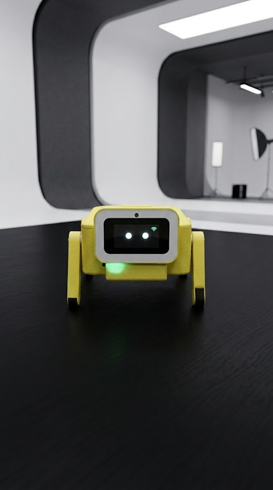

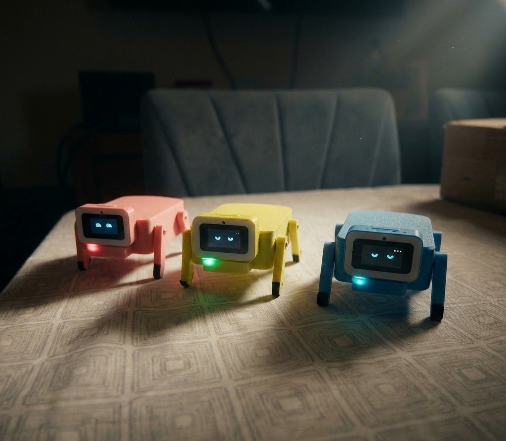
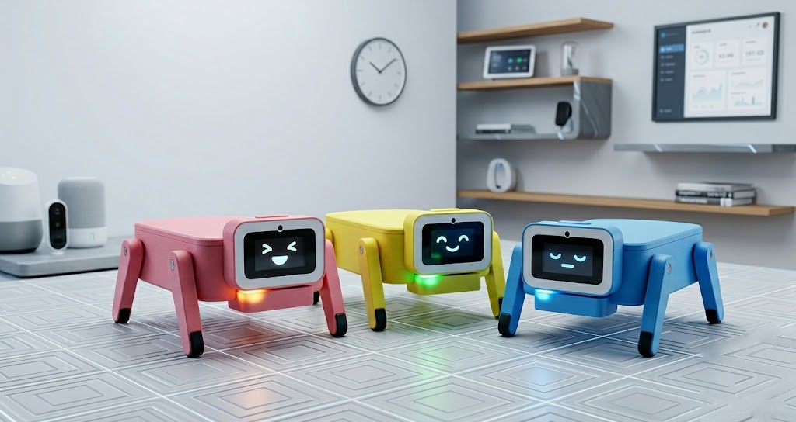
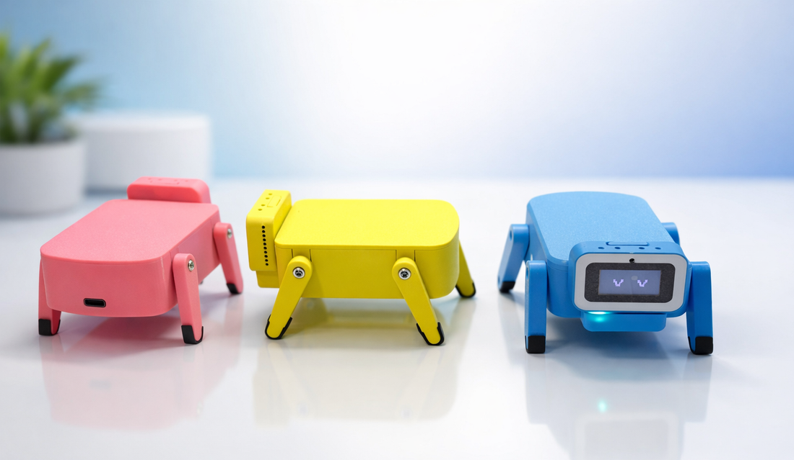
A experiência começou com a FastrackGPS e evoluiu para a LocalizaAuto: rastreamento, operação em campo e produto digital conectados em uma jornada contínua.
A FastrackGPS nasceu como uma operação completa de rastreamento veicular e chegou a quase 10.000 clientes. A experiência evoluiu para a LocalizaAuto, com uma plataforma atualizada para acompanhar veículos, contas e rotinas operacionais em tempo real.
Uma experiência renovada de rastreamento, com operação web e mobile conectada ao uso real do produto.
Mais de 20 anos de experiência de mercado — do setor bancário regulado a produto próprio — com profundidade técnica que vai de cloud e dados a IA generativa e hardware embarcado.
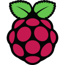
De mainframe a IA generativa, do código à liderança e ao empreendedorismo.
Lidero um squad de 30+ engenheiros sustentando 40+ APIs a 99,95% de SLA nas jornadas de Open Finance e Open Insurance. FAPI/OAuth, Data Lake, FinOps (-60% custo cloud) e IA Generativa aplicada.
10 anos no Itaú. Chapter Lead na Comunidade de Finanças, liderando a célula do IFRS 17 com 30 pessoas. Coordenação de automação de testes para Conta Corrente, Pagamentos e Empréstimos.
Fundei e operei por 13 anos um SaaS de rastreamento veicular que chegou a quase 10.000 clientes ativos. Desenvolvimento IoT, integração GPS e gestão de equipe técnica e comercial.
Criamos assistentes virtuais em Slack, Messenger, Telegram e Web usando IA para clientes globais, incluindo a Time Warner.
Analista programador em projetos para Itaú, TAM e Telefônica. Mainframe (Cobol, CICS, DB2), Oracle/PL-SQL, análise de performance e suporte de software.
Clique nos cards com vídeo para assistir. Da IA embarcada à realidade aumentada e ao IoT em escala.
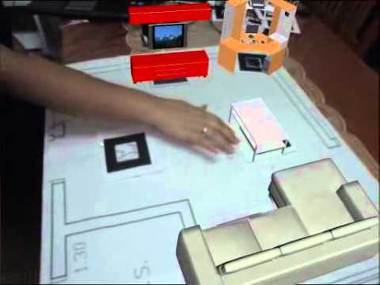
Robô impresso em 3D rodando Llama 2 em Raspberry Pi, com hotword offline (Porcupine), Vosk e voz ElevenLabs. 93 reações no LinkedIn.
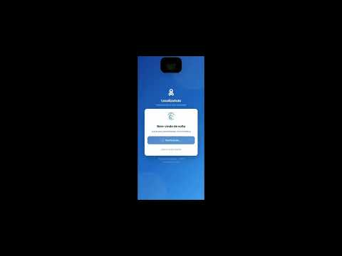
Plataforma SaaS completa de rastreamento veicular com mapa interativo, app Android e hardware GPS.
Assistente de voz completo num ESP32 do tamanho de uma moeda: transcrição, ChatGPT e ElevenLabs num wearable.
Assistentes virtuais com IA para Slack, Messenger, Telegram e Web. Clientes globais, incluindo a Time Warner.
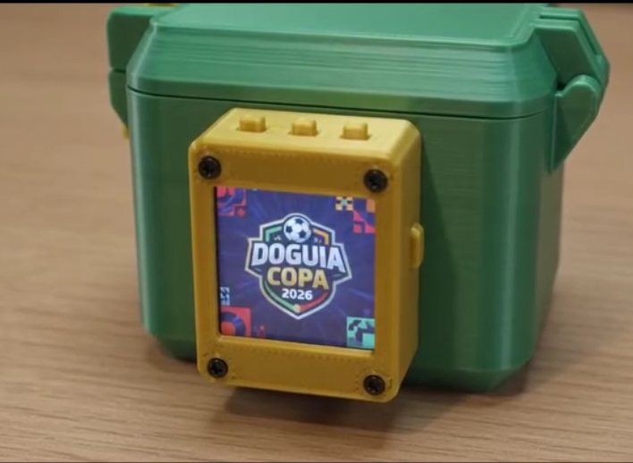
Porta-figurinhas com display colorido, assistente de voz em português, placares ao vivo, contagem regressiva e alerta de gols. ESP32-S3 + impressão 3D, prototipado em ~3h com IA generativa.
Tecnologia é meu maior combustível. Estou sempre construindo — de Tech Challenges de IA na FIAP a agentes LLM, MCP e voz embarcada.
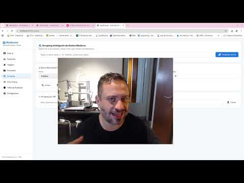
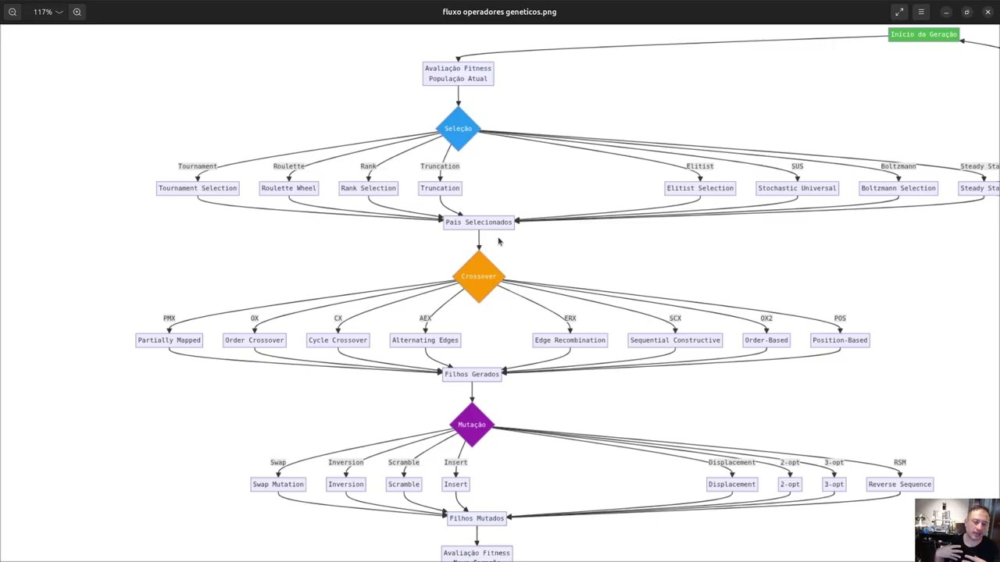
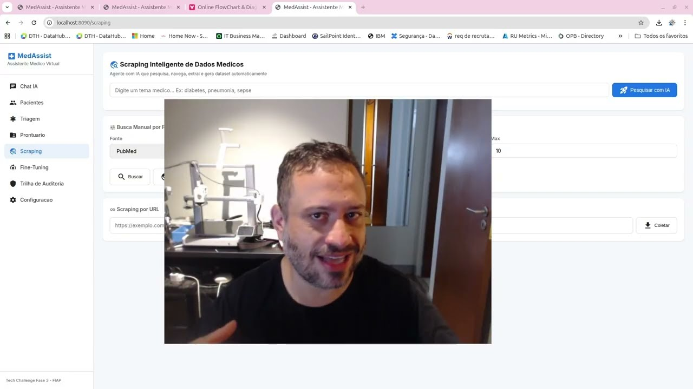
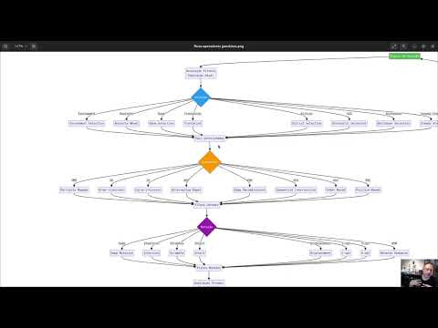
Cliente Open Finance: SQLite + Next.js + agente LLM (Ofinsan) + bot Telegram + MCP.
Servidor MCP para integração de dados financeiros com agentes de IA.
Assistente de voz standalone no M5Stack Atom Echo: fale e receba resposta por voz.
Korvo V1.1 com ChatGPT — assistente de voz em placa de áudio com IA.
Cloudflare Worker: proxy de preview do Deezer para MP3 mono com cache R2.
"Marcus é um gestor excelente, sempre preocupado com o bem-estar do time e que sabe valorizar a individualidade de cada um. Tem um conhecimento técnico incrível e está sempre perto para tirar dúvidas — tem sido um aprendizado constante trabalhar com ele."
"Marvin é um gestor fantástico, faz excelente gestão de projeto e do time. Sempre apoiando a todos na parte técnica, nos estudos e nas entregas. Faz muita diferença trabalhar com um gestor como ele no dia a dia."
Me conte onde o projeto está travado ou o que precisa ganhar escala. Em uma conversa inicial, eu ajudo a organizar o cenário e identificar o próximo passo.